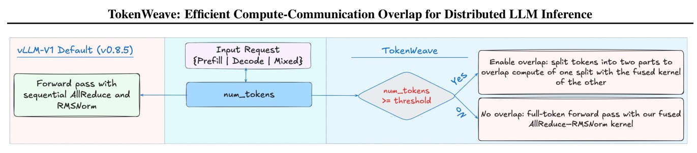
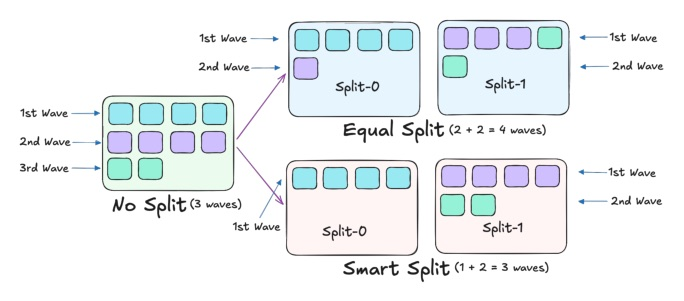
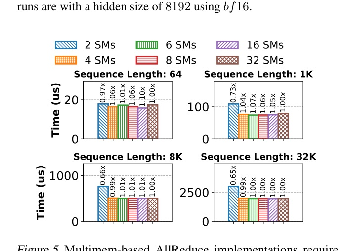
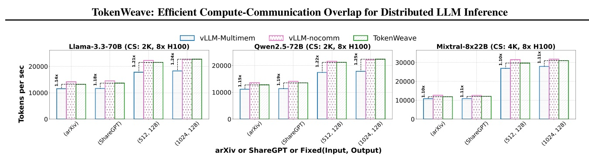
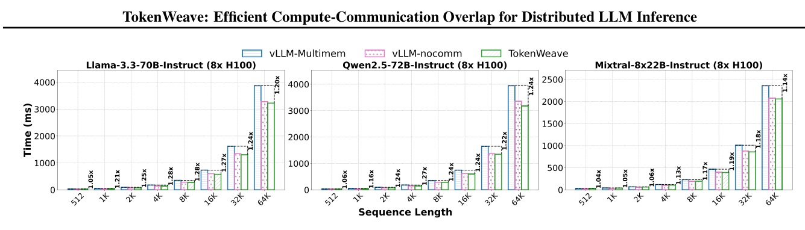
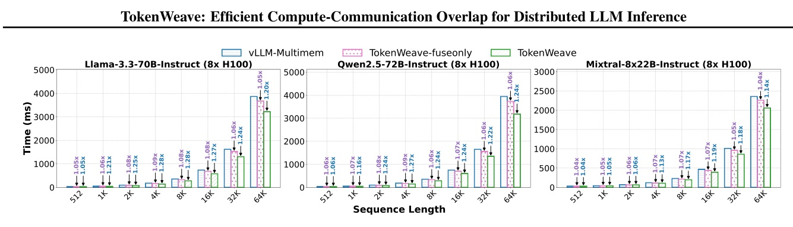

把 AllReduce、RMSNorm 與 GPU wave 排程一起重做；讓 tensor-parallel LLM serving 從 1K tokens 開始也能有效 overlap。
不是把通信藏起來而已；先把 RMSNorm 的冗餘計算與 HBM traffic拿掉，再讓通信不搶走 compute 的 SM。
選題回溯：當日 arXiv discovery 遭 429；以 MLSys 2026 官方 paper index 與原始 PDF 兜底。
讓 overlap 適用於 1K-token serving batch，而不是只在大 batch 微基準裡好看。


Fig.9 reports Smart-split reduces split overhead particularly at short sequence lengths.
| operation | 64 tok | 1K tok | 8K tok | 32K tok |
|---|---|---|---|---|
| Sequential AR + RMSNorm | 24.64 | 104.67 | 685.63 | 2671.84 |
| Simple fusion | 24.74 | 108.70 | 715.33 | 2495.10 |
| Fused (ours) | 17.70 | 75.71 | 502.24 | 1960.90 |
| Speedup | 1.39x | 1.38x | 1.37x | 1.36x |
8xH100 DGX, hidden 8192, bf16; latency in microseconds except the speedup row.

TokenWeave 成功的真因：先縮資源 footprint，再排重疊。


Dense 8xH100 runs: 1.16x–1.28x improvement from 1K onward; Mixtral has weaker / short-length caveats.

對 inference optimizer 而言，最值得問的不是「還能不能多開一條 stream」，而是：現在每一個 SM 與 HBM access 到底在做什麼。
“The splitting is carefully chosen to be wave-aware, ensuring that the total number of waves executed in kernels of the two splits is not more than the number of waves if there were a single non-split kernel.”
切分刻意讓兩個子 kernel 的 wave 總數不超過未切分 kernel 的 wave 數；它直接針對 split 的隱性 occupancy 損失。
“We then perform RMSNorm computation immediately on this reduced portion available in the SM registers without using the HBM.”
ReduceScatter 後的 shard 直接在 SM registers 做 RMSNorm，不先讀寫 HBM；這使 fused kernel 不只是「把三個操作包在一起」。
“In MoE, the tokens for MLP computation get split across the experts ... even TokenWeave’s coarse splitting into two subtasks can result in non-trivial overheads.”
MoE 的 expert split 會使小 request 的 FFN memory-bound；即使只是兩個 coarse splits 也可能虧，因此只有 fused kernel 的 fallback 不是附帶功能。
Efficient compute–communication overlap begins with efficient resource use.